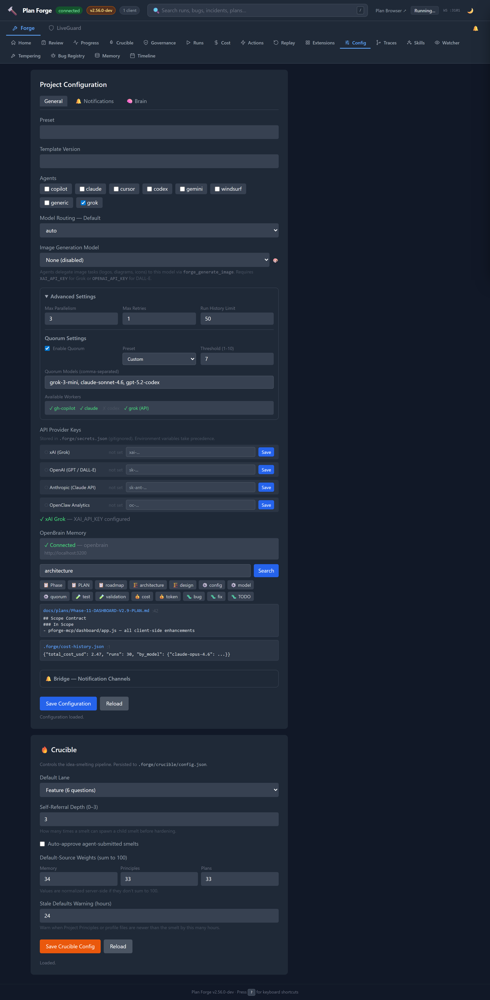

Progress
Live view of the currently executing plan. Each slice is rendered as a card showing its status (pending, executing, completed, failed), the AI model used, execution time, and token cost. The progress bar updates in real time via WebSocket events. Slices using API-based models like Grok display a purple API badge.
The Plan Browser panel lists all plan files in docs/plans/ with their status, slice count, and branch. Click Estimate to preview cost/token estimates or Run to launch execution directly. Expand Select slices to toggle individual slices on/off before running — unchecked slices are passed as --skip-slices.
The Scope Contract accordion shows each plan's In Scope, Out of Scope, and Forbidden file lists. The DAG View reveals slice dependency relationships with [P] parallel tags and ← dependency arrows.
The Event Log panel at the bottom records all WebSocket events in real time with timestamps, color-coded by event type. It auto-scrolls during active execution and executing slice cards show a live elapsed-time counter.
Slice cards show escalation indicators — when auto-escalation promotes a slice to a stronger model after retry failures, a ⬆️ Escalated badge appears showing the model promotion chain. The Plan Browser → /ui link opens the Web UI plan visualization for a read-only DAG view.

Runs
Historical log of every plan execution with powerful filtering, sorting, and analysis tools.
- Filter Bar — filter by plan, status, model, mode, and date range. Filters combine with AND logic.
- Sortable Columns — click any column header to cycle through ascending, descending, and default sort order.
- Run Detail Drawer — click any row to slide open a right-panel drawer showing per-slice detail cards with status, worker, tokens, cost, gate errors, expandable gate output, and Tasks & commands detail (task list, build/test commands). Failed runs show a Resume from Slice N button to restart from the failure point.
- Run Comparison — toggle Compare mode, select two runs, and view side-by-side cards with cost/duration/token deltas color-coded (green = lower, red = higher).
- Export — export filtered runs as JSON or CSV via the Export dropdown menu.
- Keyboard Navigation — press
j/kto move between rows,Enterto open detail,Escto close.

Cost
Cumulative cost visualization across all runs. The donut chart breaks down spend by model, and the monthly bar chart shows cost over time. Data comes from cost-history.json.
The Cost Trend Line Chart plots per-run cost with a dashed average line. Points are color-coded: green (within 2× average), amber (2-3×), red (>3×). An Anomaly Detection Banner appears automatically when any of the latest 5 runs exceeds 3× the historical average — click to dismiss.
The Duration Per Run bar chart visualizes execution time per run — color-coded blue (<2min), amber (2-5min), red (>5min). The Model Comparison table aggregates per-model performance: run count, pass rate, average duration, cost per run, and total tokens. Export Cost downloads cost data as JSON or CSV.
The Model Performance section shows success rate per model with a color-coded bar chart (green >80%, amber 60-80%, red <60%). When agent-per-slice routing is active, shows the recommended model vs. actual model used, with historical success rate driving the recommendation.

Actions
One-click access to 12 forge operations. Run Smith (environment diagnostics), Sweep (TODO/FIXME detection with structured table view), Analyze (plan consistency scoring), Analyze (Quorum) (multi-model consensus analysis), Diagnose (multi-model bug investigation), Status (editable phase status with inline dropdowns), Validate (setup file checks), and Extensions (catalog browser). Results display inline below each card.
Launch Plan opens a full execution modal — pick a plan, mode (auto/assisted), model, quorum toggle, then launch or estimate first. Worker detection shows available CLI workers and API providers. Create Branch creates a git branch from the plan's branch strategy. Auto-Commit generates a conventional commit from the current slice goal. Diff shows changed files color-coded against the scope contract — green for in-scope, yellow for out-of-scope, red for forbidden.

Config
View and edit project configuration without touching files. Set the active preset, template version, enabled agents (Claude, Cursor, Codex, Gemini, Windsurf, Generic), and default model routing. The API Providers section shows which external model providers are configured — set XAI_API_KEY to enable Grok models (grok-4, grok-3, grok-3-mini). The OpenBrain Memory section shows whether the OpenBrain MCP server is connected for persistent project memory. Changes save to .forge/config.json.
The Bridge Status panel shows connected notification channels (Telegram, Slack, Discord, Generic), notification level per channel, and pending approval count. When approvals are pending, Approve/Reject buttons let you resolve them directly from the dashboard. The Escalation Chain shows the configured model promotion order from .forge.json.
The Advanced Settings panel exposes max parallelism, max retries, run history limit, and full Quorum Settings (enable/disable, complexity threshold, model list). The Available Workers section shows detected CLI workers and API providers.
The Memory Search panel features categorized preset chips (Plans, Architecture, Config, Testing, Cost, Issues) that auto-populate searches. Click any preset to instantly search, or type custom queries. Results render as formatted cards with file paths, line numbers, and excerpts. When no results match, the panel suggests alternative queries.

Traces
OTLP-compatible execution trace viewer. Each plan run produces a trace with spans for every slice, gate check, and tool invocation. Select a run to see its full span tree with timing, status codes, and error details. Use the Search spans input to filter by span name, attributes, or log summary content in real time. Compatible with OpenTelemetry collectors for export to Jaeger, Zipkin, or Azure Monitor.
Quorum Visualization — when a run used quorum mode, a purple banner shows model legs, success rate, and dispatch duration. Slice spans show a 🔮 badge with leg counts. Click any quorum span to see a detail panel with complexity score, threshold, models dispatched, successful legs, dispatch duration, and reviewer cost.
Enhanced Span Attributes — clicking any span now renders a formatted attribute table (not raw JSON) with friendly labels, expandable log summaries, and structured event rendering with per-event attributes and severity coloring.

Skills
Monitor multi-step skill executions in real time. Skills like /code-review, /database-migration, and /staging-deploy emit step-level events via WebSocket. Each step shows its status (pending, running, completed, failed) with a progress indicator.
The Skill Catalog grid shows all available skills (both built-in and custom). Custom skills from .github/skills/ are tagged with a blue custom badge; built-in skills show a gray built-in badge. The catalog loads from the /api/skills endpoint.

Replay
Session replay for completed runs. Select any historical run and replay its execution timeline step by step. See exactly which slices ran, when gates passed or failed, and how costs accumulated. Useful for post-mortems, team reviews, and debugging failed executions.

Extensions
Browse and manage community extensions directly from the dashboard. Each extension card shows the name, description, author, version, and what it provides (agents, instructions, prompts, MCP config). Cards include Install and Uninstall buttons — click to install or remove extensions without leaving the dashboard. Installed extensions show a green checkmark. Extensions are curated in the community catalog.